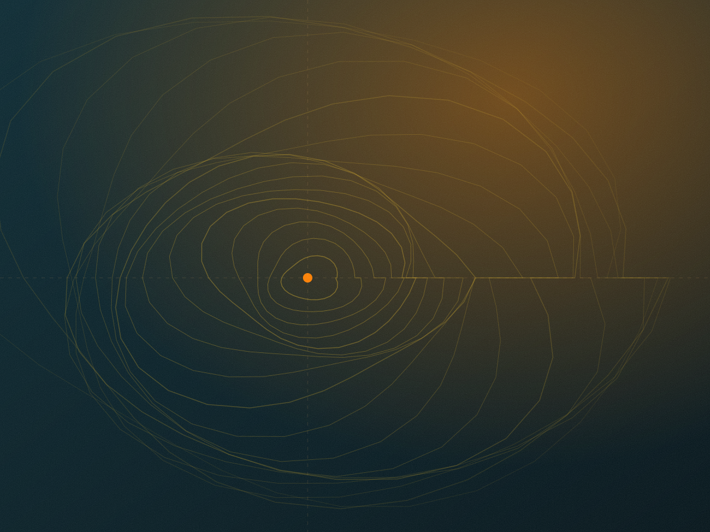

Earlier contexts
A space for orienting readers to broad regional contexts before connecting any source to a particular community history. No periodisation is asserted.
Evidence fields →These broad markers are research prompts, not confirmed events or a complete periodisation. Entries will expand only as documentation and community review allow.

Context plateIllustrative plate — not archival evidence.
A period heading helps a reader locate a question. It does not establish that something happened in that period, that the period is agreed, or that the category is locally meaningful.
Where a date appears in future entries, it will carry its own status: documented, inferred, contested, or approximate.
Expand an entry to see what would be needed before any public historical claim could be responsibly described.
A space for orienting readers to broad regional contexts before connecting any source to a particular community history. No periodisation is asserted.
Evidence fields →Comparative material from neighbouring areas may help frame questions, but difference must not be smoothed into resemblance.
Records requiring comparison: catalogues, correspondence, registers, and reports whose provenance, language, and relationship to scope are assessed.
May be catalogued as leads while provenance, language, and relationship to the archive’s scope are assessed.
Living accounts and stewardship, described by access conditions rather than displayed where consent review remains active.
Material that exists but is not available for browsing, quotation, or inference from the public description.
These are the fields that turn a prompt into a record. They are shown empty here so the gap is visible rather than hidden.
A period entry can be published before its supporting material is fully documented — but only when it is labelled as a prompt. The label is not a formality; it is the condition that makes publication honest.
Place labels carry their own conditions: orientation, connection, movement, and naming. The places docket explains how each is used.
Press Esc to close · searching page titles and descriptions